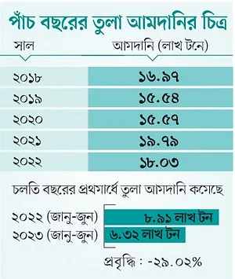

বস্ত্র খাত
চলতি বছরের প্রথম ছয় মাসে তুলা আমদানি কমেছে ২৯ শতাংশ। হঠাৎ করে তৈরি পোশাকের ক্রয়াদেশ বাড়লে সংকট তৈরির আশঙ্কা বস্ত্রকলমালিকদের।
রাশিয়া-ইউক্রেন যুদ্ধ ও দেশে দেশে উচ্চ মূল্যস্ফীতির মধ্যেও ২০২২-২৩ অর্থবছরে তৈরি পোশাক রপ্তানি বেড়েছে ১০ শতাংশ।
চলতি বছরের প্রথম ছয় মাসের পরিসংখ্যান বিশ্লেষণে
দেখা যায়,
পোশাকের রপ্তানি বেড়েছে ৫ দশমিক ৬৪ শতাংশ। যদিও এই সময়ে পোশাকের অন্যতম প্রধান কাঁচামাল তুলার আমদানি কমেছে ২৯ শতাংশ।
গত জানুয়ারি থেকে জুন—এই সময়কালে দেশের বস্ত্রকলগুলো ১৭ হাজার কোটি টাকার ৬ লাখ ৩২ হাজার টন তুলা আমদানি করেছে।
গত বছরের একই সময়ে আমদানি হয়েছিল ৮ লাখ ৯১ হাজার টন তুলা।
যদিও গত বছর
শেষে তুলা আমদানি দাঁড়িয়েছিল
১৮ লাখ টনে।
তাতে ব্যয় হয়েছিল
৪৭ হাজার কোটি টাকা।

পোশাক রপ্তানি বাড়ল আর তুলার আমদানি কমল—এমন বৈপরীত্যের বিষয়ে বস্ত্র খাতের কয়েকজন উদ্যোক্তা জানান, গত বছরের দ্বিতীয়ার্ধে তৈরি পোশাকের ক্রয়াদেশ কমেছে।
তার প্রভাব বস্ত্র খাতে পড়েছে। এমনও হয়েছে, যেটুকু ক্রয়াদেশ ছিল সেটুকুও গ্যাস-সংকটের কারণে সময়মতো দেওয়া যায়নি। অন্যদিকে গত বছর বিপুল পরিমাণ তুলা আমদানি হয়।
যেহেতু গ্যাস, ডলার ও ক্রয়াদেশ-সংকট ছিল, তাই অনেক স্পিনিং মিল বেশি তুলা আমদানির ঝুঁকি নেয়নি।
বর্তমান পরিস্থিতিতে হঠাৎ করে তৈরি পোশাকের ক্রয়াদেশ বাড়লে
সুতার সংকট দেখা দিতে পারে
—এমন আশঙ্কার কথা জানান উদ্যোক্তারা। তাঁরা বলছেন, তুলা আমদানির জন্য বুকিং দিলে দেড় থেকে দুই মাস সময় লাগে। আবার ডলার-সংকটের কারণে
তুলা আমদানির ঋণপত্র খুলতে অনেক প্রতিষ্ঠানের বেগ পেতে হচ্ছে।
আমদানি করা তুলা দিয়ে স্পিনিং মিলগুলো সুতা তৈরি করে। সেই সুতায় উৎপাদিত কাপড় দিয়ে তৈরি পোশাক রপ্তানি করা হয়।
বস্ত্রকলমালিকদের সংগঠন বিটিএমএর তথ্যানুযায়ী, বাংলাদেশের রপ্তানিমুখী নিট পোশাক কারখানার চাহিদার ৮০ শতাংশ সুতার জোগান দেয় দেশীয় স্পিনিং মিলগুলো। ওভেন পোশাক কারখানার ক্ষেত্রে সেটি ৩৫-৪০ শতাংশ। দেশে বর্তমানে সুতার কল আছে ৫১০টি। সেগুলোর সুতা উৎপাদনের ক্ষমতা বছরে ৩৮০ কোটি কেজি।
বিটিএমএ জানায়, করোনাকালেও দেশে তুলা আমদানি কমেনি। ২০১৯ সালে ১৫ লাখ ৫৪ হাজার টন তুলা আমদানি হয়। পরের বছর করোনার মধ্যেও আগের বছরের
চেয়ে তিন হাজার টন বেশি তুলা আমদানি হয়। ২০২১ সালে তৈরি পোশাকের রপ্তানি ভালোভাবে ঘুরে দাঁড়ালে ১৯ লাখ ৭৯ হাজার টন তুলা আমদানি হয়।
২০২২ সালে আমদানি হয় ১৮ লাখ টন তুলা।
বাংলাদেশে আমদানি হওয়া তুলার ৪৩ শতাংশ আফ্রিকা থেকে আসে। একক দেশ হিসেবে ভারত থেকে আসে ২০ শতাংশ তুলা। গত বছর ৮১ লাখ বেল তুলা আমদানি হয়। তার মধ্যে আফ্রিকা থেকে সাড়ে ৩৫ লাখ বেল, ভারত থেকে ১৬ লাখ, ব্রাজিল থেকে ১৩ লাখ এবং বেনিন থেকে ১১ লাখ ৫১ হাজার বেল তুলা আমদানি হয়েছে।
বাংলাদেশে আমদানি হওয়া তুলার ৪৩ শতাংশ আফ্রিকা থেকে আসে। একক দেশ হিসেবে ভারত
থেকে আসে ২০ শতাংশ তুলা। গত বছর ৮১ লাখ বেল তুলা আমদানি হয়। তার মধ্যে আফ্রিকা
থেকে সাড়ে ৩৫ লাখ বেল, ভারত থেকে ১৬ লাখ, ব্রাজিল থেকে ১৩ লাখ এবং বেনিন থেকে ১১
লাখ ৫১ হাজার বেল তুলা আমদানি হয়েছে।
লিটল গ্রুপ অব কোম্পানিজের চেয়ারম্যান খোরশেদ আলম বলেন, গ্যাস-সংকটের কারণে
উৎপাদন সক্ষমতার দুই-তৃতীয়াংশ ব্যবহার করতে না পারায় গুদামে তুলা পড়ে আছে। বর্তমানে
গ্যাসের সরবরাহ পরিস্থিতি অনুযায়ী যদি উৎপাদন সক্ষমতার অর্ধেক ব্যবহার করি, তাহলে
মজুতকৃত তুলায় ছয় মাস চলবে। আর পুরো সক্ষমতায় চললে তিন মাস।
অপর এক প্রশ্নের জবাবে খোরশেদ আলম বলেন, গত মাসের তুলনায় নতুন ক্রয়াদেশের
অনুসন্ধানের হার বাড়ছে। গুদামে থাকা সুতা বিক্রি বেড়েছে। সামনের দিনে ক্রয়াদেশ বাড়লে
তুলা আমদানি নিয়ে সমস্যা হবে না।
এদিকে তুলার পাশাপাশি সুতা আমদানিও
কমেছে। ২০১৮ ও ২০১৯ সালে যথাক্রমে ৭ লাখ ১৪
হাজার ও ৬ লাখ ৪৫ হাজার টন সুতা আমদানি হয়। করোনার বছর অর্থাৎ ২০২০ সালে আমদানি
হয় ৬ লাখ ৫৩ হাজার টন সুতা। পরের বছর তৈরি পোশাকের ক্রয়াদেশ বাড়লে সুতা আমদানিও বেড়ে ১০ লাখ ৭৪ হাজার
টন হয়। সর্বশেষ গত বছর ৩৯ হাজার ৯৭৮ কোটি টাকার ১০ লাখ ২৮
হাজার টন সুতা আমদানি হয়।
বিটিএমএ বলছে, এ বছরের প্রথমার্ধে সুতা আমদানি কমেছে ৩৬ শতাংশ। গত জানুয়ারি-জুন
সময়ে ৪ লাখ ১৩ হাজার টন সুতা আমদানি হয়। গত বছরের একই সময়ে আমদানি হয়েছিল ৬
লাখ ৪৮ হাজার টন সুতা। তার মানে চলতি বছরের প্রথম ছয় মাসে সুতা আমদানি কমেছে ২ লাখ ৩৫ হাজার টন।
বিটিএমএ সভাপতি মোহাম্ম্মদ আলী বলেন, বস্ত্রকলগুলোতে উৎপাদন বাড়তে শুরু করেছে। কিন্তু
গ্যাস-বিদ্যুতের সংকট সমাধানের কোনো লক্ষণ নেই। এ জন্য অধিকাংশ কারখানা উৎপাদন
সক্ষমতার ৪০-৫০ শতাংশের বেশি ব্যবহার করতে পারছে না। আবার ডলার-সংকটও কাটেনি।
এরই মধ্যে রপ্তানি উন্নয়ন তহবিলের আকার (ইডিএফ) কমিয়েছে বাংলাদেশ ব্যাংক। ফলে তুলা
আমদানির এলসি খুলতে কিছুটা বেগ পেতে হচ্ছে। এখন হঠাৎ করে তৈরি পোশাকের ক্রয়াদেশ
বাড়লে তুলা ও সুতার জোগানে কিছুটা সমস্যা হলেও হতে পারে।